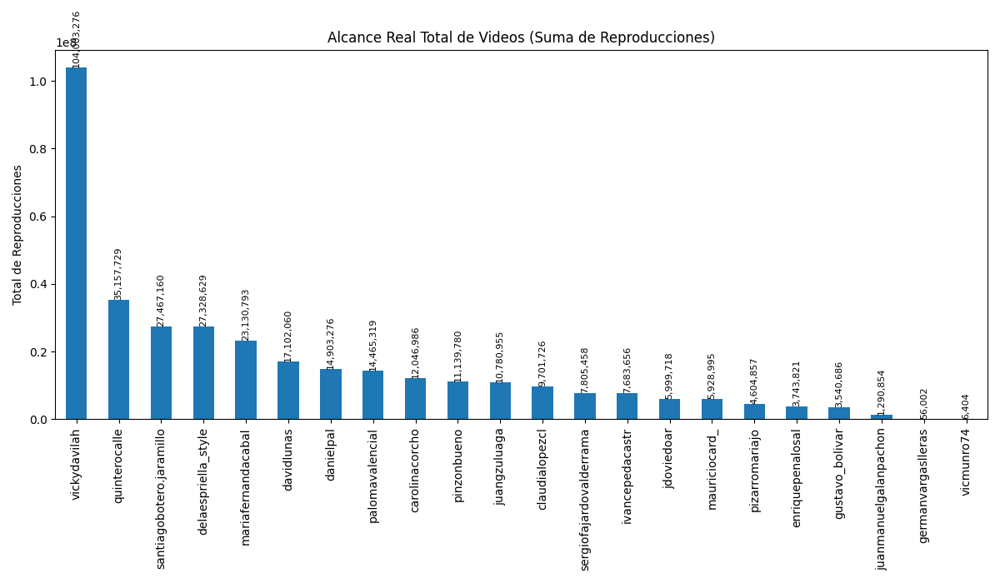

Análisis General de Candidatos en Instagram
Análisis basado en datos de Instagram en Octubre de 2025
Gráficos Comparativos de Rendimiento General



Resumen de Engagement por Tipo de Contenido
| Candidato |
Seguidores |
Avg. Engagement Video (Likes) |
Avg. Engagement Video (Comentarios) |
Avg. Engagement Imagen (Likes) |
Avg. Engagement Imagen (Comentarios) |
Avg. Engagement Carrusel (Likes) |
Avg. Engagement Carrusel (Comentarios) |
| Andrés Guerra |
88,365 |
740.47% |
56.13% |
140.89% |
10.33% |
12.11% |
0.79% |
| Anibal Gaviria |
71,218 |
433.17% |
17.53% |
13.90% |
0.70% |
147.92% |
2.82% |
| carolinacorcho |
141,816 |
1032.56% |
53.18% |
196.89% |
8.54% |
307.89% |
19.41% |
| Claudia Lopez |
1,001,020 |
233.09% |
35.77% |
12.14% |
0.48% |
5.34% |
0.42% |
| Daniel Palacios |
60,309 |
254.54% |
12.72% |
166.00% |
119.97% |
28.57% |
2.90% |
| David Luna |
257,980 |
214.24% |
8.98% |
234.72% |
6.09% |
80.25% |
2.54% |
| Abelardo de la Espriella |
793,083 |
791.65% |
48.26% |
918.37% |
37.70% |
504.43% |
24.90% |
| Efraín Cepeda |
29,604 |
86.45% |
3.74% |
106.19% |
1.36% |
342.91% |
5.25% |
| Enrique Peñalosa |
113,690 |
807.13% |
47.17% |
250.71% |
6.85% |
95.97% |
3.74% |
| Germán Vargas Lleras |
141,792 |
352.13% |
19.29% |
197.32% |
7.58% |
324.45% |
10.84% |
| gustavo_bolivar |
432,783 |
646.16% |
52.86% |
0.00% |
0.00% |
0.00% |
0.00% |
| gustavobolivarsenador |
174,354 |
747.91% |
88.93% |
2.87% |
0.80% |
82.86% |
3.51% |
| Hector Olimpo |
47,044 |
370.59% |
58.40% |
75.38% |
5.32% |
94.87% |
6.06% |
| Ivan Cepeda |
229,542 |
847.17% |
42.34% |
140.97% |
4.53% |
120.30% |
3.47% |
| Juan C. Cardenas |
26,190 |
301.69% |
29.73% |
56.75% |
8.05% |
192.66% |
152.34% |
| Juan Daniel Oviedo |
252,222 |
303.63% |
12.56% |
36.30% |
1.59% |
24.28% |
0.59% |
| Juan Guillermo Zuluaga |
107,276 |
380.55% |
22.09% |
51.38% |
2.63% |
91.25% |
4.31% |
| Juan Manuel Galan |
43,420 |
442.05% |
34.98% |
93.33% |
3.37% |
80.54% |
2.75% |
| Luis Gilberto Murillo |
41,087 |
539.44% |
106.24% |
113.62% |
14.14% |
115.62% |
13.43% |
| Maria Fernanda Cabal |
381,638 |
466.68% |
29.86% |
229.72% |
10.73% |
105.46% |
4.63% |
| Mauricio Cardenas |
99,833 |
444.89% |
24.56% |
112.87% |
5.74% |
61.86% |
1.77% |
| Mauricio Gómez |
524,134 |
365.29% |
86.60% |
15.08% |
3.37% |
9.94% |
2.55% |
| Mauricio Lizcano |
68,188 |
102.11% |
12.58% |
139.56% |
8.83% |
14.99% |
1.29% |
| Miguel Uribe Londoño |
122,735 |
644.27% |
47.01% |
997.41% |
29.29% |
483.64% |
13.22% |
| Paloma Valencia |
266,079 |
856.68% |
34.05% |
63.35% |
2.72% |
48.60% |
1.15% |
| Paola Holgín |
156,573 |
633.20% |
30.17% |
33.81% |
1.24% |
39.23% |
0.91% |
| Juan Carlos Pinzón |
66,404 |
668.02% |
50.94% |
30.94% |
0.82% |
203.89% |
10.22% |
| Felipe Córdoba |
85,374 |
204.93% |
13.48% |
511.70% |
14.16% |
301.08% |
11.74% |
| pizarromariajo |
267,746 |
849.31% |
45.85% |
167.19% |
7.74% |
194.15% |
5.97% |
| quinterocalle |
366,769 |
392.85% |
49.05% |
63.01% |
20.03% |
34.42% |
2.71% |
| Roy Barreras |
105,854 |
465.85% |
15.51% |
43.82% |
12.79% |
92.14% |
1.94% |
| Santiago Botero |
219,313 |
429.97% |
27.32% |
427.69% |
20.71% |
73.19% |
3.55% |
| Sergio Fajardo |
277,683 |
525.07% |
28.00% |
31.63% |
0.94% |
46.16% |
1.80% |
| Vicky Dávila |
1,503,660 |
331.60% |
47.36% |
78.37% |
6.01% |
21.80% |
2.07% |
| Victor Muñoz |
2,574 |
234.91% |
11.05% |
303.03% |
12.54% |
233.55% |
3.89% |
Análisis Individual Detallado